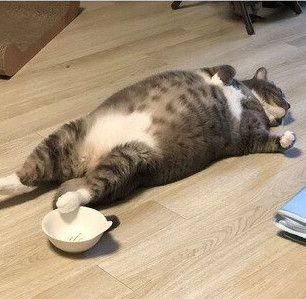

고양이 짤 성격 테스트

당신의 고양이는
"밥 먹자마자 드러눕는 고양이"
입니다
외로움을 많이 타는 성격이에요. 조금 관종끼가 있고 표현을 아끼지 않아서 어른들이 좋아하는 성격이에요. 그리고 밖에 나가 노는 걸 좋아하긴 하는데 나가기 까지의 과정이 귀찮아서 나가기 싫어하는 사람이 많아요. 공감 능력이 조금 부족해서 상대에 관한 생각을 하는 것 자체가 너무 귀찮아요.